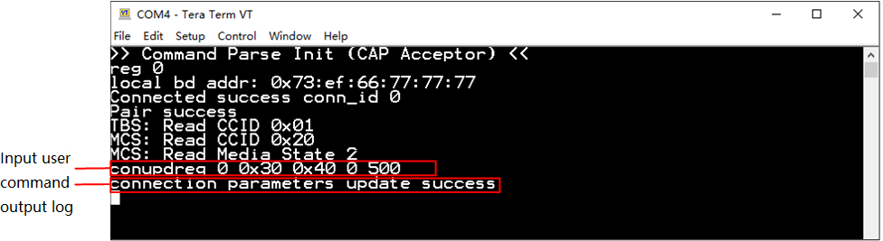
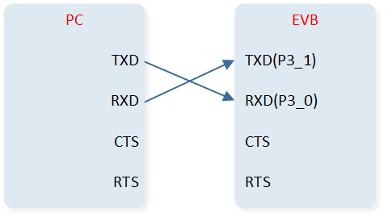
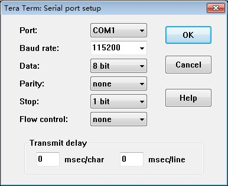

User Command Interface
This document is intended to introduce users to how to use the user command interface, divided into the following two parts:
Bluetooth LE sample projects using user commands can refer to:
The user needs to input commands via the computer's Data UART to perform interactions (the computer's USB port is connected to the EVB through a USB-to-serial module).
Implementation of User Commands
Relevant Documents
The description of each file is as follows:
Filename |
Description |
|---|---|
|
Initializes Data UART and prints data through Data UART. |
|
Data UART DLPS initialization, related callbacks, and event handling. |
|
Processes Data UART data from the lower layer and executes corresponding commands. |
|
Defines user commands. |
Note
data_uart.c,data_uart_dlps.c,user_cmd_parse.c, and their header files are located under the pathsrc\mcu\module\data_uart_cmd.The
user_cmd.cfile needs to be defined and added by the user.
Configuration Options
Developers can configure the following values in user_cmd_parse.h:
/*============================================================================*
* Macros
*============================================================================*/
/** @defgroup USER_CMD_PARSE_Exported_Micros User Command Parse Module Exported Micros
@brief command parse related macros.
* @{
*/
#define USER_CMD_MAX_COMMAND_LINE 80 /**< max. length of command line in bytes */
#define USER_CMD_MAX_HISTORY_LINE 3 /**< max. num of history command line */
#define USER_CMD_MAX_PARAMETERS 20 /**< max. number of parameters that the parser will scan */
/** End of USER_CMD_PARSE_Exported_Micros
* @}
*/
Initialization
void app_main_task(void *p_param)
{
uint8_t event;
......
data_uart_init(evt_queue_handle, io_queue_handle);
user_cmd_init(&user_cmd_if, "central");
......
}
data_uart_init()is used to initialize Data UART.user_cmd_init()is used to initialize the user command module.
Data UART RX Handling
void app_handle_io_msg(T_IO_MSG io_msg)
{
uint16_t msg_type = io_msg.type;
uint8_t rx_char;
switch (msg_type)
{
......
case IO_MSG_TYPE_UART:
/* We handle user command information from Data UART in this branch. */
rx_char = (uint8_t)io_msg.subtype;
user_cmd_collect(&user_cmd_if, &rx_char, sizeof(rx_char), user_cmd_table);
break;
default:
break;
}
}
user_cmd_collect() is used to collect command characters and execute commands.
Users can enter commands in the serial assistant, using ENTER as an end.
Data UART TX Processing
Data UART TX is used for outputting information.
void app_handle_conn_state_evt(uint8_t conn_id, T_GAP_CONN_STATE new_state, uint16_t disc_cause)
{
......
case GAP_CONN_STATE_CONNECTED:
{
le_get_conn_addr(conn_id, app_link_table[conn_id].bd_addr,
&app_link_table[conn_id].bd_type);
data_uart_print("Connected success conn_id %d\r\n", conn_id);
}
break;
......
}
data_uart_print() is used to print data through Data UART.
Users can see the printed information on the serial assistant side.
How to Add Commands
The application side needs to define a user command table.
The command format is as follows:
/** @brief Prototype of functions that can be called from the command table. */
typedef T_USER_CMD_PARSE_RESULT(*T_USER_CMD_FUNC)(T_USER_CMD_PARSED_VALUE *p_parse_value);
/**
* @brief Command table entry.
*
*/
typedef struct
{
char *p_cmd;
char *p_option;
char *p_help;
T_USER_CMD_FUNC func;
} T_USER_CMD_TABLE_ENTRY;
Parameter Description:
- p_cmd:
Includes commands that can be used in serial communication software.
- p_option:
Describes the format of user commands.
- p_help:
Provides a description of the command's functionality.
- func:
Points to the function that will be executed when the command is called.
Example as follows:
static T_USER_CMD_PARSE_RESULT cmd_conupdreq(T_USER_CMD_PARSED_VALUE *p_parse_value)
{
T_GAP_CAUSE cause;
uint8_t conn_id = p_parse_value->dw_param[0];
uint16_t conn_interval_min = p_parse_value->dw_param[1];
uint16_t conn_interval_max = p_parse_value->dw_param[2];
uint16_t conn_latency = p_parse_value->dw_param[3];
uint16_t supervision_timeout = p_parse_value->dw_param[4];
cause = le_update_conn_param(conn_id,
conn_interval_min,
conn_interval_max,
conn_latency,
supervision_timeout,
2 * (conn_interval_min - 1),
2 * (conn_interval_max - 1)
);
return (T_USER_CMD_PARSE_RESULT)cause;
}
const T_USER_CMD_TABLE_ENTRY user_cmd_table[] =
{
/************************** Common cmd *************************************/
{
"conupdreq",
"conupdreq [conn_id] [interval_min] [interval_max] [latency] [supervision_timeout]\n\r",
"LE connection param update request\r\n\
sample: conupdreq 0 0x30 0x40 0 500\n\r",
cmd_conupdreq
},
......
};
How to Use Commands
Taking conupdreq [conn_id] [interval_min] [interval_max] [latency] [supervision_timeout] as an example, conupdreq is the command name, and following conupdreq are the parameters for the command, with multiple parameters separated by spaces.
Users can enter commands in the serial port assistant of the computer, then press ENTER or click Send to send the command. The recommended serial port assistant is Tera Term.
{kind=link}

User Command Example
How to Display Commands
Enter ? to display all supported commands.
Enter xxx ? to display the command format, for example conupdreq ?.
Data UART Connection
Bluetooth LE sample projects by default use P3_0 as the TX pin for Data UART and P3_1 as the RX pin for Data UART.
Each sample project has a board.h file, which defines the pin settings for Data UART.
#define DATA_UART_TX_PIN P3_0
#define DATA_UART_RX_PIN P3_1
The Data UART pin can be configured according to the actual hardware environment.
The PC connects to the Data UART of the EVB running the Bluetooth LE sample project via a USB to serial port module, as shown in the figure:
{kind=link}

Data UART Connection between PC and EVB
Set the baud rate for Data UART to 115200. The parameter settings for the computer's serial port assistant tool are shown in the figure:

Serial Port Settings